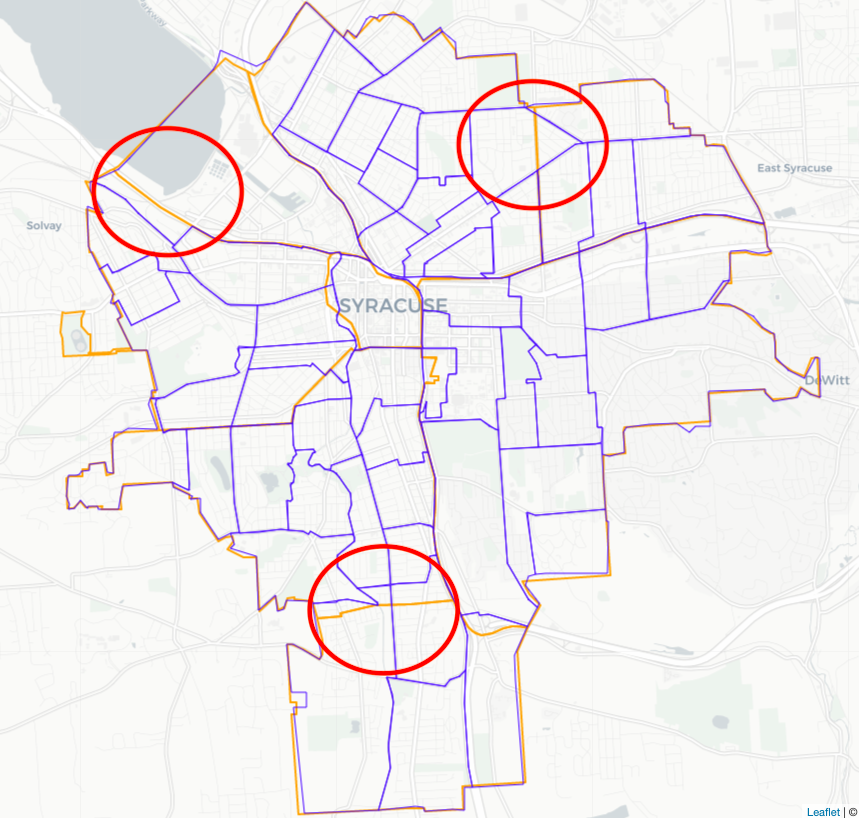
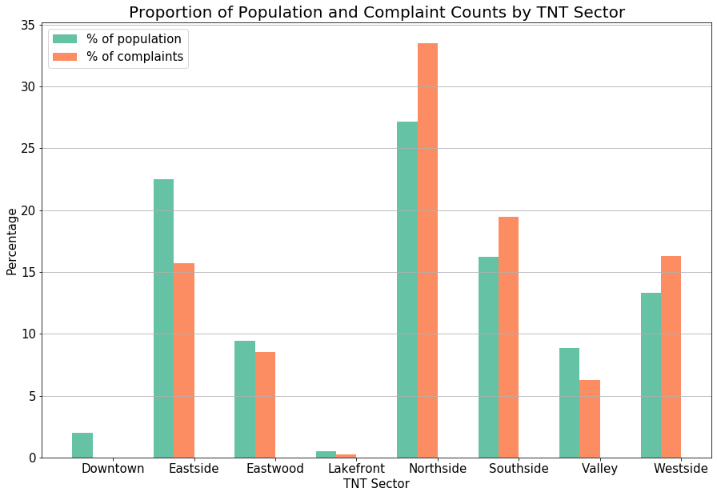
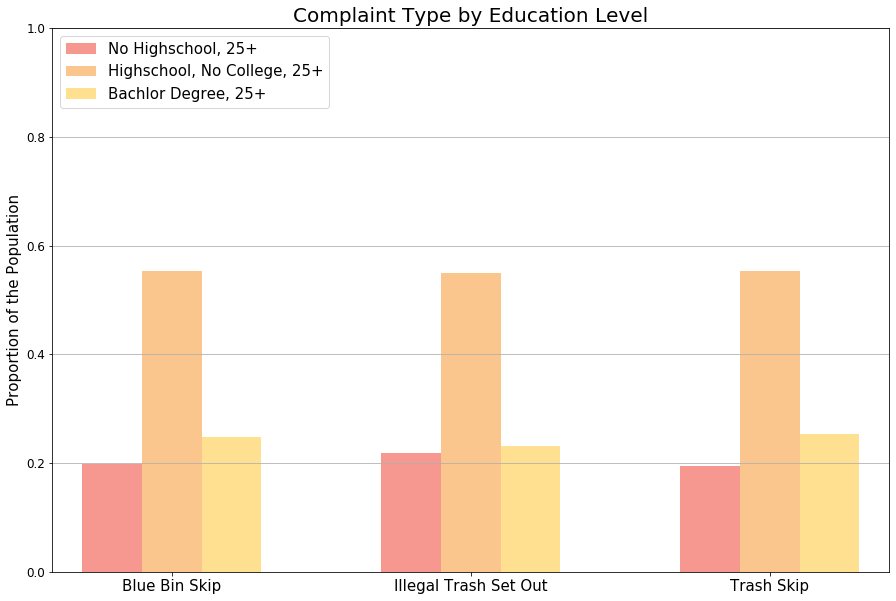
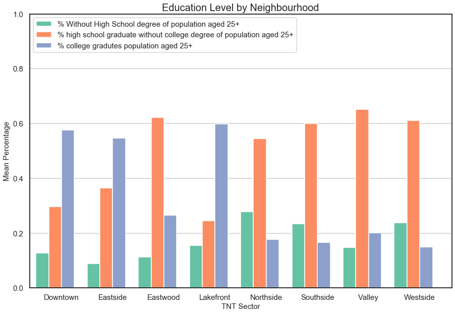
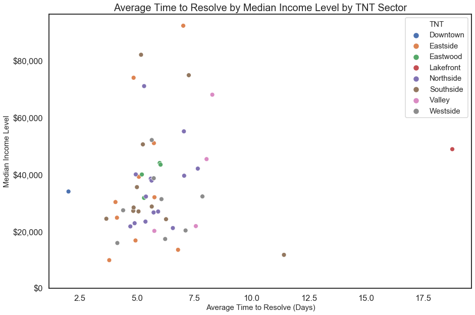

Cityline Syracuse
Exploratory Data Analysis with Python
The project, for data-driven decision-making class, required students to apply Python skills to merge, clean, and analyze several datasets, and to interpret the results to make policy recommendations. My colleagues, Daniela and Hailey, and I decided to focus on trash-related complaints to the City of Syracuse. The research began with two questions:
- Is there a pattern between the demographic profile of each neighbourhood and frequency of complaints?
- Is there a difference in time to resolve?
Process
The research is based on three datasets: Cityline Calls for Service (Cityline), Parcel Data April 2018 (Parcel), and American Community Survey (ACS) 5-Year Estimates from 2013-2017. The first two datasets are collected and managed by the city of Syracuse and ACS is accessed via Social Explorer.
- Cityline: contains 57,110 complaints about non-emergency problems in the city of Syracuse received through the Cityline system.
- Parcel: contains 41,623 entries of parcel information.
- ACS: contains 140 census tracts and demographic information for each tract in the county.
We used Parcel to obtain Census Tract for each of the complaints in Cityline then merged with ACS for demographic information.
Data cleaning and Merging
Check out the code on GitHub. The research is based on three datasets: Cityline Calls for Service (Cityline), Parcel Data April 2018 (Parcel), and American Community Survey (ACS) 5-Year Estimates from 2013-2017. The first two datasets are collected and managed by the city of Syracuse and ACS is accessed via Social Explorer. Cityline: contains 57,110 complaints about non-emergency problems in the city of Syracuse received through the Cityline system. Parcel: contains 41,623 entries of parcel information. ACS: contains 140 census tracts and demographic information for each tract in the county. We used Parcel to obtain Census Tract for each of the complaint in Cityline then merged with ACS for demographic information.)! The cleaning process involved the following activities:
- Remove incorrect addresses
- Replace direction abbreviation to full name and move it to the front
- Concatenate number and street name for full address
- Remove duplicated entries
- Reformat census tract into standard FIPS
After extracting complaint types that we wanted to work with, we had 7,064 entries left for analysis.
Major Challenge
The boundaries for census tract and TNT sectors differ, however, with one census tract spreading over several sectors and one sector containing multiple census tracts (see below). Therefore the neighborhood demographic characteristic analysis would be inaccurate.

After consulting with Professor and conducting several failed attempts to tabulate intersection in ArcGIS system, the team decided to compare the census tract map and TNT sector map side by side and assign each tract to the sector with larger proportion of the tract in order to move forward.
Population
The following graph summarizes our findings regarding population. Northside indeed had a higher percentage of complaints than other sectors, accounting for 27.16% of the population and 33.49% of the trash complaints. Southside and Westside follow a similar pattern in that the proportion of complaints exceeds the proportion of the population.
On the contrary, around 22.53% of the population live in Eastside and only 15.69% of the complaints are from there. Downtown, Eastwood, Lakefront, and Valley sectors followed a similar trend. We can conclude that, although there is not a strong relation, the more population a neighborhood has, the more trash complaints it reports.

Education Level
When analyzing the Complaint Type by Education Level, the characteristics of sectors with high levels of trash complainers were from neighborhoods where residents predominantly had a high school degree, and no college degree. This trend was apparent across trash complaint types.

There was variation in education level by sector as well, with Downtown, Eastside and Lakefront having the greatest percentage of college graduates, and the Eastwood, Northside, Southside, Valley and Westside having highest percentages of high school graduates without a college degree.

Median House Income Level
A subtle positive relationship between complaint frequency and median income level was observed, neighborhoods with high median household income level had more trash related complaints.
As the following scatterplot shows, Time to Resolve varied mainly between 2.5 and 7.5 days across income levels. Interestingly, income levels above $40,000 were actually centered around a higher time to close than lower income levels.

Limitations
Lack of Individual Demographic Information
Across all TNT sectors, none had a complaint rate over 7%. Furthermore, whether some complaints were repeatedly filed by one individual is unknown.
Problems Establishing Geographic Boundaries
Census Tract boundaries do not line up with TnT Sector boundaries and so the TnT Sector demographics and time to close analyses cannot be matched perfectly.
Inaccurate Data
The original Cityline and Parcel datasets contain many errors. Even system information, such as open and close time, are inaccurate, and many complaints are marked to resolve at midnight, resulting in negative numbers for time to resolve.
Conclusion
In conclusion, no significant patterns were found. The number of trash related complaints is not significantly correlated with any demographic variable and time to resolve.
Recommendations
- Close times must be entered accurately and immediately after a complaint has been resolved.
- There should also be a greater clarification as to what variables mean. The meaning of Location versus Address for example should be clear.
- In order that more demographic analyses can be performed using the TnT sectors, theTnT non-profit should consider drawing boundaries to match with relevant census tracts.
Additional Information
The research started in September 2019 and finished in December 2019 with the guidance from Dr Matt Young.